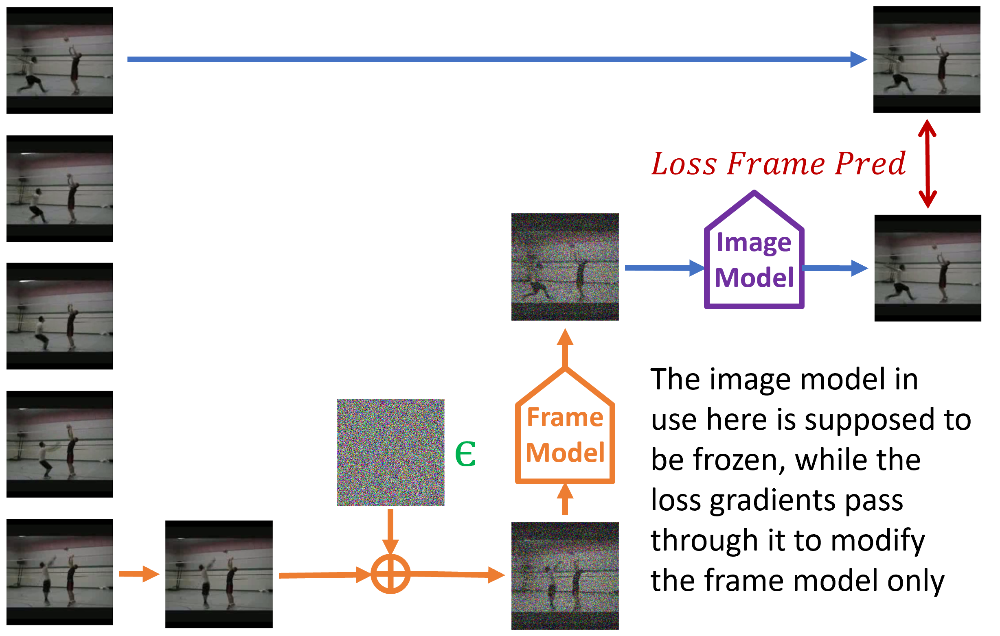
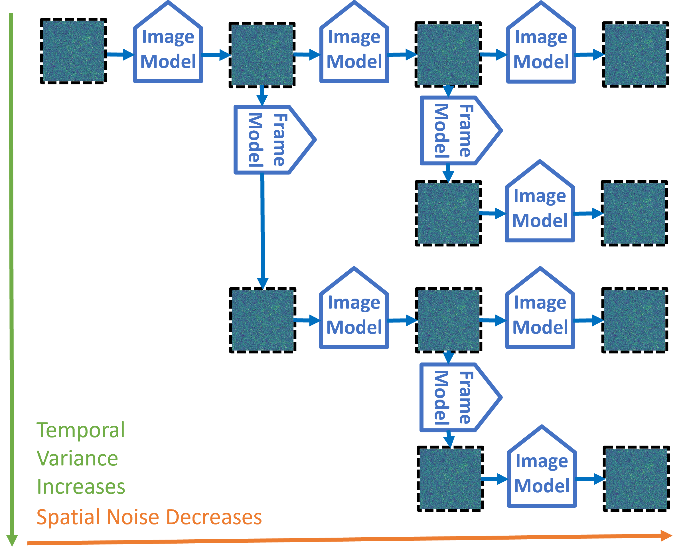
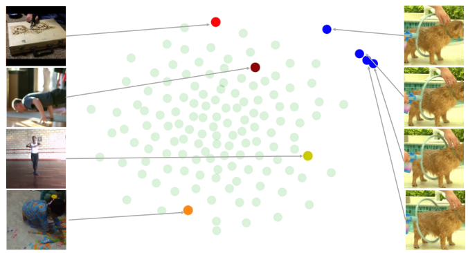

Project Page
Noise Manipulation for Video Generation
This is a project trying to utilize noise space manipulation to generate coherent videos.
Abstract
We explore noise-space manipulation in generative modelling, venturing into multiple use cases - compositional generation, accelerated sampling, and noise guidance. We then use it as a light weight alternative for video diffusion, enabling temporally coherent generation via frozen image models.
Report
Method Overview
- Observing the noise space of a frozen image model, frames from a video lie close to each other, hinting at some form of manifold.
- We want to add noise to a single sample, such that the corrupted sample is temporally correlated to the initial sample at an attempt to learn this manifold.
Training

Inference

Preserve your own correlation

Results
BibTeX
@misc{guptaNoiseVideoGen,
title={Noise Manipulation for Video Generation},
author={Vishesh Gupta, Jente Vandersanden, Gurprit Singh, Hans-Peter Seidel},
year={2025},
url={https://shiroyasha263.github.io/VideoGen/VideoGen.html}
}